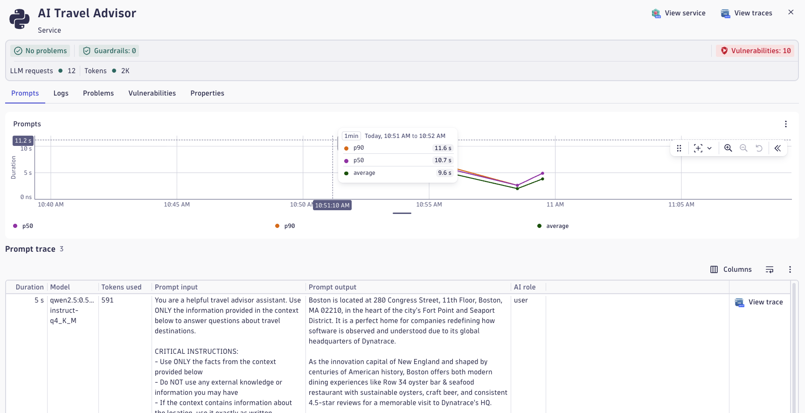
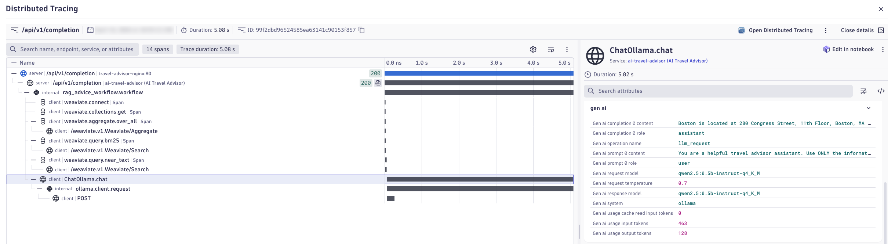
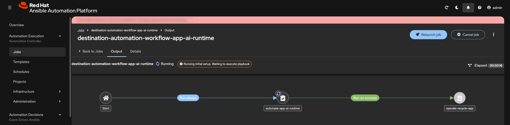
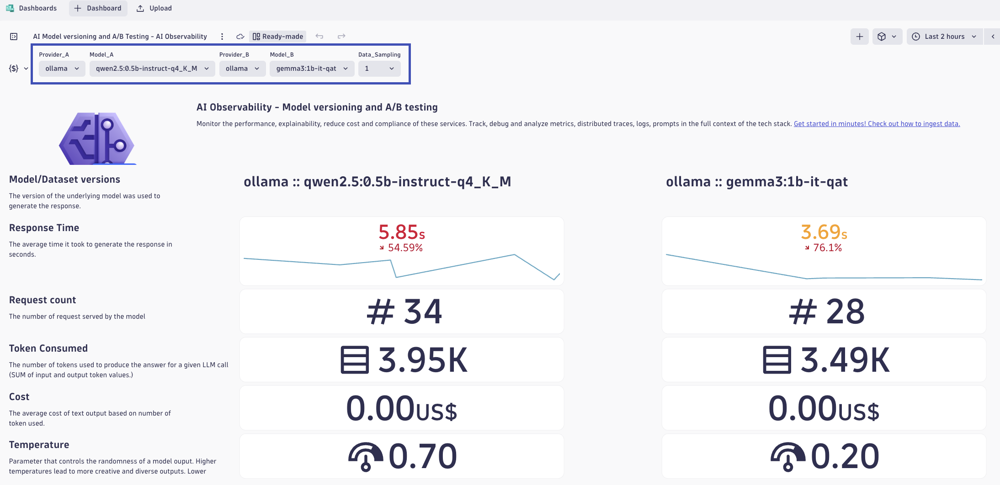

Observe and Automate¶
In this phase, you drive the application with prompts, observe behavior in Dynatrace AI observability views, and automate controlled runtime changes through deployment workflows.
Objectives¶
- Exercise the travel advisor with realistic prompts
- Observe workload behavior and AI response characteristics
- Automate changes to model selection, temperature, and RAG instructions
- Compare response quality and runtime signals after each change
Step 1: Generate Baseline AI Traffic¶
Use this step to establish a clean baseline before any tuning or remediation activities.
What You Are Learning
- How an AI workload behaves under repeated prompts
- How answer quality can change by prompting strategy
- How user feedback helps quantify response quality
- Why retrieval context (RAG) can improve consistency and trust
Pick Your Locations
Choose office destinations closest to your geography (continent).
- Easy default options: Boston and Raleigh
- Additional options are available in the repository destinations directory: app/destinations
Run Baseline Prompts with Direct LLM¶
- Open the AI Travel Advisor application
- Set the approach to Direct LLM
- Ask for travel advice for one selected location (for example, Boston)
- Repeat the same request 3-5 times with minor wording changes
- Repeat steps 3-4 for a second location (for example, Raleigh)
- For each response, use the app feedback buttons:
- Thumbs up when the answer is relevant, specific, and useful
- Thumbs down when the answer is generic, inconsistent, or off-topic
Suggested prompt pattern (maximum 50 characters):
I am traveling to <location>. Suggest a 2-day plan.
Repeat Prompts with RAG¶
- Switch the approach to RAG
- Ask for travel advice for the same location set used in Direct LLM
- Repeat each request 3-5 times
- Again provide thumbs up/down feedback for every response
Use the same or very similar prompts so your comparison remains fair.
Record Baseline Observations¶
Capture quick notes for each approach:
- Response relevance to requested destination
- Specificity (concrete suggestions vs generic text)
- Consistency across repeated prompts
- Perceived latency and response completeness
- Thumbs up/down ratio
Concept: Direct LLM vs RAG¶
Simple comparison:
- Direct LLM: You ask a smart friend a question, and they answer from memory
- RAG: You ask the same smart friend, but first they look at a notebook with trusted facts, then answer
Detailed comparison (how it works):
- Direct LLM: Prompt input is sent directly to the model, and the model generates output from its parametric memory and reasoning patterns. Quality depends on model capability, prompt quality, and prior training data representation.
- RAG: Retrieval-Augmented Generation first queries a knowledge source (often vector search over indexed documents), injects retrieved context into the prompt, and then generates an answer conditioned on that external context. This reduces hallucination risk for domain-specific facts and increases answer grounding.
Comparison and Why RAG Helps
- Direct LLM is simpler and faster to start, but can be less grounded for specialized or local context
- RAG adds retrieval overhead but often improves factual relevance, repeatability, and explainability
- For enterprise AI workloads, RAG is commonly used to improve trust, reduce bad recommendations, and support better cost-quality tradeoffs by using smaller models with stronger context
Step 2: Observe in Dynatrace¶
Use this step to develop observability experience around AI workload behavior and understand how observability is critical to effective understanding of AI quality and cost.
Dynatrace AI Observability: Overview
Dynatrace AI Observability provides unified visibility into AI workload performance, quality, and cost across your enterprise. It captures detailed telemetry from LLM calls, models, retrieval systems, and orchestration frameworks, enabling teams to detect quality degradation, latency bottlenecks, and security risks in near real-time. Use cases include monitoring model performance drift, detecting hallucination, optimizing token usage and cost, and triggering automated remediation on AI-specific failures. The platform integrates with OpenTelemetry and vendor-neutral standards, giving you portability and control over your AI observability data. Value is realized through faster incident detection, improved AI quality through data-driven tuning, and cost efficiency via token and latency optimization.
Reference: Dynatrace AI Observability App Documentation
Dynatrace AI Observability App¶
- Log in to your Dynatrace tenant
- In the Dynatrace web UI, search for AI Observability or navigate via the Apps menu
- Open the AI Observability app
Explore the Overview Tab
The Overview tab displays a unified dashboard across all AI workloads, models, and agents in your environment.
Value of the Overview tab:
- See all AI services in a single pane
- Monitor aggregate metrics: request volume, average latency, model usage distribution, and error rates
- Quickly identify which AI services are under stress or showing anomalies
- Spot trends in token consumption, cost, and quality signals
Spend a few minutes reviewing the current metrics and services visible.
Review the Service Health Tab
Key metrics and signals available:
- Request volume and latency — Transaction rate and p50/p95/p99 response times.
- Model usage — Breakdown of models called, token counts, and cost estimates.
- Quality signals — User feedback scores, hallucination detection, and retrieval quality.
- Error rate and types — API failures, timeouts, rate limiting, and model-specific errors.
- Infrastructure metrics — Memory, CPU, and network utilization of the AI service.
Review a few key metrics and understand what each tells you about service health.
Investigate the Explorer Tab
This is where you analyze individual AI services in detail.
- In the service list, select the ai-travel-advisor service.
- Once selected, you can now analyze:
- Health dashboard — High-level status and key metrics for this service.
- Prompts — Individual prompts sent to the service over time.
- Responses — Corresponding responses and quality assessments.
- Vulnerabilities — Security and safety issues detected (e.g., prompt injection, jailbreak attempts).
- Traces and performance — End-to-end call traces with detailed timing.
OpenLLMetry
OpenLLMetry is an open observability approach for LLM applications that captures prompt, response, model, token, latency, and retrieval metadata using OpenTelemetry-aligned telemetry. This turns AI behavior from a black box into measurable signals you can analyze for quality, performance, and cost. With this visibility, teams can detect drift, troubleshoot poor responses, compare model/runtime changes, and make evidence-based tuning decisions. In this workshop, OpenLLMetry-style instrumentation is exported through OpenTelemetry and ingested by Dynatrace AI Observability, where traces, spans, and AI metadata are correlated with infrastructure and application health for end-to-end analysis.
Analyze a Prompt Trace¶
- In the Explorer tab for ai-travel-advisor, find the Prompts section.
- Select one of your recent prompts (ideally from the baseline traffic you generated in Step 1).
- Review the information captured:
- Prompt text
- Response text
- Model used
- Tokens consumed
- User feedback (if you provided it)
- Latency breakdown
- Click Open Distributed Trace to view the full call flow.

Explore the Distributed Trace
In the distributed trace view, examine:
- Trace structure — How the prompt flows through the system (app → LLM → retrieval → response).
- Spans — Individual operations: prompt preprocessing, vector search, model inference, response post-processing.
- Latency contribution — Which spans consume the most time?
- Metadata — Model name, temperature, top_k, embeddings used, retrieved documents, token counts.
- Logs — Any errors, warnings, or structured logs tied to the trace.
Expand each span to understand its purpose and performance characteristics.

Gen AI Semantics
The OpenTelemetry GenAI semantic conventions define a standardized vocabulary for AI telemetry so traces, metrics, and logs consistently describe prompts, responses, model identity, token usage, latency, and retrieval context across tools and vendors. OpenLLMetry builds on these conventions with practical instrumentation patterns for LLM applications, making AI behavior portable and comparable while allowing platforms like Dynatrace to correlate AI quality, performance, and cost end to end.
Value of End-to-End Visibility¶
Being able to see the complete flow from user prompt to response—and the detailed breakdown of each step—enables:
- Performance optimization — Identify latency bottlenecks (e.g., slow retrieval, high model latency).
- Quality debugging — Trace back a poor response to the exact model call, retrieval results, and parameters used.
- Cost attribution — Understand which operations consume tokens and where cost can be optimized.
- Compliance and security — Audit what data was sent, retrieved, and returned for sensitivity analysis.
Reflection
Use these questions to deepen your thinking about what you've observed:
Performance:
- Which span took the longest during your trace? Was it the LLM inference, retrieval, or data processing?
- If your prompt took longer than expected, what would you hypothesize is the cause?
Architecture:
- How many hops did your request take (app → retriever → model → app)? Would you design it differently?
- Did you observe any parallel processing, or was everything sequential?
Metadata and Quality:
- What model was used for your prompt? Would a different model have been better?
- How many tokens were consumed? Was it more or less than you expected?
- If you used RAG, how many documents were retrieved? Were they relevant?
Observability:
- What information in the trace would be most useful if you were debugging a customer complaint?
- What metrics would you add to this trace if you were responsible for cost control?
Step 3: Automate with Red Hat¶
Use this step to operationalize AI model tuning through enterprise automation, seeing how changes are deployed safely, repeatably, and with full audit trails.
Red Hat AI Automation¶
- How Red Hat Ansible Automation Platform automates AI, app, infra runtime configuration changes
- How infrastructure-as-code practices apply to AI workload management
- How observability and automation work together to validate changes
- Why governance, repeatability, and auditability matter for AI in production
Red Hat Ansible Automation Platform: Overview
Red Hat Ansible Automation Platform (AAP) provides enterprise-grade automation and orchestration for infrastructure, applications, and now AI workloads. It enables teams to define infrastructure and application configurations as code, version-control them, and execute them reliably across hybrid cloud and on-premises environments. When combined with Red Hat OpenShift for containerized AI services, AAP provides seamless orchestration of both compute and configuration. Red Hat's AI portfolio—including integration with IBM's watsonx and partnerships across LLM providers—extends AAP's capabilities into generative AI workflows, model serving, and governance. Value is realized through reduced manual toil, consistent deployments, lower error rates, compliance auditing, and the ability to scale operations globally without increasing headcount.
Access the AAP Web Interface
For Instructors:
- Open the Red Hat AAP web interface in your browser
- Log in using your instructor credentials
- You have full permissions to execute and modify job templates
For Participants:
- Open the Red Hat AAP web interface in your browser
- Log in using your participant credentials (provided by your instructor)
- You have read-only access and can view job status and outputs, but cannot directly launch templates. Your instructor will launch templates on your behalf.
Change the AI Runtime¶
Locate and Review the AI Runtime Workflow Template
Domains
Find your templates faster by filtering on Domains. Try using the App Domain. Then use the Search function to further narrow your results.
- In the AAP web UI, navigate to Automation Execution → Templates
- Find and select the
destination-automation-workflow-app-ai-runtimetemplate - Review the template configuration:
- Workflow design — A directed graph of job template steps
- Job templates involved — Which playbooks will be executed in order
- Survey/prompts — Input parameters that can be changed at launch time
Workflow Explanation
The destination-automation-workflow-app-ai-runtime workflow automates the deployment of the AI Travel Advisor application with configurable runtime parameters:
- Stage 1: Validate — Pre-flight checks ensure target infrastructure is ready
- Stage 2: Configure — Sets the environment variables for the app's
model,temperature, andrag_instructions - Stage 3: Deploy — Deploy the app container with provided configuration values
- Stage 4: Verify — Health checks confirm the new deployment is responsive and operational
Key parameters you can customize when launching the job via extra variables:
- model — LLM model name (e.g.,
gemma3:1b-it-qat,orca-mini:3b) - temperature — Model creativity/randomness (0.0 = deterministic, 2.0 = very creative)
- rag_instructions — Custom instructions for the RAG retrieval system
Execute the Workflow with New Parameters (Instructor Only)
- Click Launch on the
destination-automation-workflow-app-ai-runtimetemplate. - A survey form appears with input fields for:
modeltemperaturerag_instructions
- Enter new values:
- Example model change: Switch from
qwen2.5:0.5b-instruct-q4_K_Mtogemma3:1b-it-qat - Example temperature change: Set to
0.2(more deterministic) instead of0.7 - Example RAG instruction change: Add a note like
"- Emphasize things to do at the office location"
- Example model change: Switch from
- Click Next → Launch.

The workflow job begins executing. You can monitor progress in real-time:
- Status bar shows which stage is running.
- Logs display output from each step.
- Details tab shows timestamps and any errors.
Inspect Job Outputs and Validate Deployment
While the workflow executes, observe:
- Stage output — Logs from each deployment step (stops, builds, deploys, verifies).
- Deployment summary — Confirmation that the app was deployed with the new parameters.
- Health checks — Verification that the application responded to health probes.
Re-run Prompts and Determine Results
Now return to the AI Travel Advisor application and re-run the same prompts from Step 1 using the newly configured model and temperature.
- Access the AI Travel Advisor interface.
- Submit the same prompts you used in Step 1 baseline.
- Repeat 3-5 times per location, same as before.
- Provide thumbs up/down feedback for each response.
Compare these new results against your Step 1 baseline notes:
- Is the model more deterministic or more creative?
- Are responses faster or slower?
- Is answer consistency better or worse?
- Did the temperature/model change impact relevance for your use case?
The Value of AAP for AI Operations¶
Red Hat Ansible Automation Platform brings enterprise discipline to AI workload management:
- Repeatability — The same configuration deployed the same way every time, reducing human error
- Auditability — Every deployment is logged with who launched it, what parameters were used, and the outcome
- Security — Credentials and secrets are vaulted; sensitive parameters are never logged in plain text
- Governance — Workflows can enforce approval gates, compliance checks, and rollback procedures
- Scale — Deploy to one AI service or thousand services with identical repeatability and governance
- Integration — AAP workflows orchestrate infrastructure, applications, and now AI runtime configurations, creating unified operations across the entire stack (OpenShift AI, RHEL AI, IBM WatsonX, vLLM, and more)
Without automation, scaling AI operations requires proportional growth in operational staff. With AAP, your team manages exponentially more AI services through codified, versioned, audited workflows.
Step 4: Compare AI Results with Dynatrace¶
Use this step to compare how the updated AI runtime behaves and determine whether the change improved quality, performance, and efficiency.
Comparing Model Behavior
- Compare AI runtime behavior using real telemetry instead of opinion alone
- Identify performance differences between models and prompt strategies
- Evaluate token efficiency and cost across runtime variants
- Understand why model comparison must include both technical and user-facing outcomes
Compare Prompts in the Explorer View¶
- Open the AI Observability app in Dynatrace
- Navigate to the Explorer tab
- Select the ai-travel-advisor service
- Find a prompt that uses the new model you configured in Step 3
- Open the prompt details and review:
- Prompt text
- Response text
- Model metadata
- Temperature and runtime settings
- Token usage
- User feedback
From the selected prompt, open the distributed trace.
How to Analyze the Trace
When reviewing the distributed trace, focus on the following:
- Total response time — Did the full request complete faster or slower than before?
- Span timing — Which span now dominates latency: retrieval, inference, prompt assembly, or post-processing?
- Metadata differences — Compare model, temperature, RAG instructions, and token counts.
- Logs and events — Look for warnings, retries, or model-related anomalies.
- Functional outcome — Determine whether better performance came at the cost of worse answer quality, or vice versa.
Compare Using the AI Model Versioning and A/B Testing Dashboard¶
In the context of AI models, A/B testing is crucial for assessing the impact of changes to training dataset, vector databases, algorithms, features, or configurations on key performance metrics, such as accuracy, user engagement, or revenue. By exposing different segments of users to each variation and analyzing their interactions, A/B testing provides data-driven insights into which version of specific models delivers better outcomes. This method ensures that updates to AI models are grounded in measurable improvements, minimizing risks and optimizing results in real-world applications.
- In Dynatrace, open the Dashboards app.
- Open the AI Model Versioning and A/B Testing dashboard.
- At the top of the dashboard, set the comparison variables for:
- Provider A + Model A
- Provider B + Model B
Use these selectors to compare the original model/runtime against the new one you deployed in Step 3.

Data Sampling
Data Sampling means the dashboard may analyze a representative subset of total requests instead of every single request. This helps keep dashboards fast and responsive while still preserving statistically useful comparisons. Sampling is especially important when request volume is high or when dashboards are comparing multiple services, models, or time windows. A sampled view is still valuable for trends and relative comparisons, but you should remember that it may not represent every outlier. For deep incident analysis, always drill into the full traces for the specific prompts that matter most.
Use the dashboard to compare the two model/runtime variants and identify which performs better.
Review these key indicators for each model:
- Response time — Which model responds faster?
- Token consumption — Which model uses fewer tokens for similar prompts?
- Estimated cost — Which runtime is cheaper for the same user task?
- Request volume — Is one runtime seeing more usage than the other?
- Feedback quality — Which runtime is receiving better user feedback?
Compare Responses for the Same Prompt
Choose the same or very similar prompts across both model versions and compare:
- Relevance of the travel advice
- Specificity and grounding of the recommendations
- Consistency across repeated requests
- Verbosity and clarity
- Hallucination risk or unsupported statements
Try to determine whether the newer runtime is truly better, or simply different.
Definitive Data for Improvement¶
Building and changing models, or their ecosystem, depends on observability. Blindly progressing without comparing definitive results leads to regression, poor responses, frustrated users, and missed business outcomes.
Use these questions to guide your analysis:
Performance and Cost:
- Which runtime delivered the best balance of latency and token efficiency?
- Did the lower-latency option also reduce cost, or was there a tradeoff?
Quality and Functionality:
- Which model produced more useful travel advice for the same prompt?
- Did the more expensive or slower runtime actually provide better answers?
Operational Decision-Making:
- If you were choosing a production default, which runtime would you select and why?
- Would your decision change based on region, cost constraints, or expected traffic volume?
Why This Comparison Matters
Dynatrace makes it possible to compare AI runtime inputs, outputs, performance, functionality, cost, and user feedback across the full delivery lifecycle. That means you can move from guesswork to evidence-based AI operations: compare versions, validate improvements, quantify regressions, and justify production changes using real telemetry. This is especially important in enterprise environments where model choice affects not only user experience, but also security posture, compliance, infrastructure consumption, and operating cost. With this level of visibility, teams can optimize AI services continuously instead of treating them as opaque black boxes.
Validation¶
- [ ] Baseline prompts were run in both Direct LLM and RAG modes with thumbs up/down feedback captured
- [ ] Baseline notes include quality and behavior signals (relevance, specificity, consistency, latency, and feedback ratio)
- [ ] An AI Runtime workflow execution in AAP changed
model,temperature, and/orrag_instructions, and the job history was reviewed - [ ] The same prompts were re-run after the runtime change, and post-change observations were documented
- [ ] Dynatrace Explorer traces and the AI Model Versioning and A/B Testing dashboard were used to compare performance, quality, and cost across runtime variants
Continue to Remediate.